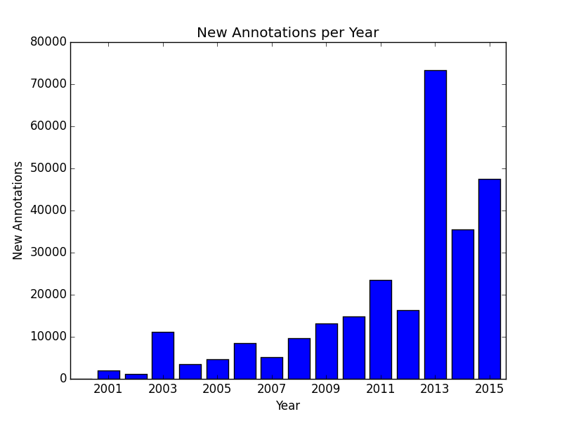
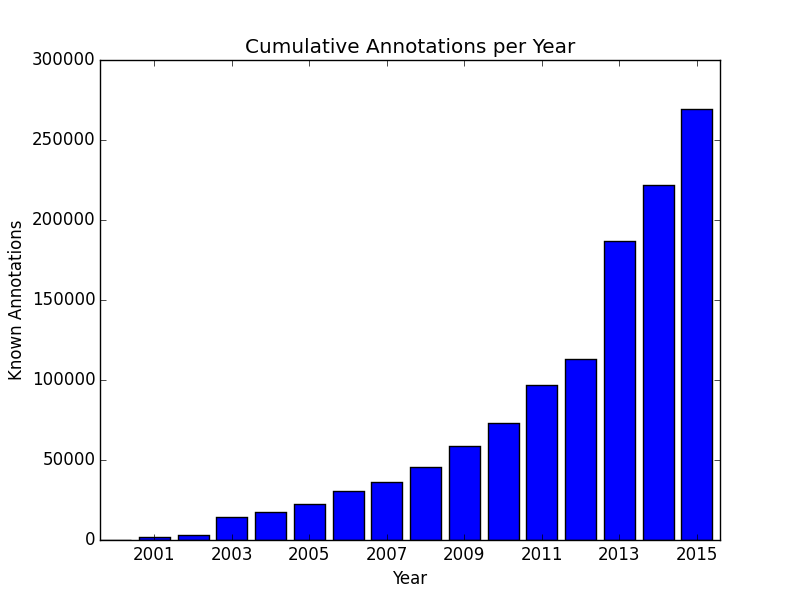

{% extends "unitbase.html" %}
{% load pytags %}
{% load handbook %}
{# title = Making sense of data #}
{# subtitle = GO, GO, pathways #}
{# name = Making sense of data: functional annotations, pathways #}
{% block body %}
{% md go %}
- - -
### Gene Ontology
- - -
Set up a tabulation shortcut. This makes our life a lot easier.
What the shortcut does is tabulates single column to compute
occurrences of each element in the column. You may add it to your profile as well.
alias tabulate="sort | uniq -c | sort -k1,1 -rn | awk -v OFS='\t' '{ print \$2, \$1 }'"
If the file `test.txt` contains:
Alpha
Beta
Alpha
Alpha
Then the command:
cat test.txt | tabulate
will produce:
Alpha 3
Beta 1
We will extensively use this tabulation command and will refer you to this
definition.
- - -
A description of the available files and what they contain can be found on the
[Gene Ontology download page](http://geneontology.org/page/download-annotations).
Get the gene ontology and association files for the Human genome:
curl -OL http://purl.obolibrary.org/obo/go.obo
curl -OL http://geneontology.org/gene-associations/gene_association.goa_human.gz
The file itself in a so called [GO Annotation File Format](http://geneontology.org/page/go-annotation-file-format-20)
Unpack and rename the file to be easier to handle, we also remove
comment lines to make processing simpler:
gunzip gene_association.goa_human.gz
cat gene_association.goa_human | grep -v '!' > assoc.txt
How many gene <-> association mappings?
cat assoc.txt | wc -l
# 491349
The gene names are in column 3. Let's see why the tabulator is so useful.
cat assoc.txt | cut -f 3 | tabulate | head -20
Note how it produces a sorted list of the most frequent gene names in the association file.
It basically counts how many times each gene name occurs in the file, then sorts the results
by this value.
HLA-B 1323
HLA-A 921
HLA-DRB1 820
TP53 722
...
So with this command we also found the most annotated genes in the file. `HLA-B` has `1323` annotations.
We could also just count the total lines to figure out how many gene names are listed overall. From
now on we will show the output of the command right below it with leading `#` symbols:
cat assoc.txt | cut -f 3 | tabulate | wc -l
# 19484
How many unique protein names (column 2) in the file ?.
cat assoc.txt | cut -f 2 | tabulate | wc -l
# 46728
What are the most annotated proteins in the dataset?
cat assoc.txt | cut -f 2 | tabulate | head
# P04637 618
# P62993 603
# P00533 540
# P0CG48 469
# P35222 443
How many lines match the gene name BRCA1 (breast cancer type 1 susceptibility protein)?
cat assoc.txt | grep BRCA1 | wc -l
# 687
We can get more deeper into the data. How many annotated gene products can be found for gene name TP53?
cat assoc.txt | cut -f 2,3 | awk ' $2=="TP53" { print }' | cut -f 1 | tabulate
# P04637 618
# A0A087X1Q1 19
# A0A087WZU8 19
# J3KP33 18
# E9PFT5 18
# ...
Now let's look at other properties of this data. How many GO annotations have been added each year?
Column 14 contains the date in the format `YYYYMMDD` example: `20140313`. We extract and transform that column, then tabulate it.
We cannot use the original tabulation as now we need to sort on years (second column) not the counts (first column) though
the code itself for tabulation is almost the same.
You will want to build your code one step at a time like so:
cat assoc.txt | cut -f 14 | head
# 20160116
# 20160116
# 20160116
# 20101115
Then keep adding building the command one step at the time:
cat assoc.txt | cut -f 14 | awk '{ print substr($1, 1, 4) }' | head
# 2016
# 2016
# 2016
# 2010
# 2010
Then finish by building out the entire command to tally the annotations by year with:
cat assoc.txt | cut -f 14 | awk '{ print substr($1, 1, 4) }' | sort | uniq -c | sort -k 2,2 -n | awk '{ print $2, $1 }
# 2000 6
# 2001 2005
# 2002 1101
# 2003 11116
# 2004 3469
# 2005 4626
# 2006 8467
# 2007 5161
# 2008 9622
# 2009 13087
# 2010 14751
# 2011 23580
# 2012 16370
# 2013 73306
# 2014 35418
# 2015 47472
# 2016 220641
We do note that the counts in the last line in the file appear to be massively larger than the others.
This is even more curious if we consider that we running this analysis in the second month of 2016
With this yet encounter some of the unfortunate "bioinformatics" territory where lots of data,
including the GO ontology is constructed with tacit assumptions and properties that are not
properly explained.
Before we investigate that let's plot the growth of data for the years up to 2016 where we can
see that the most annotations seem to have been added in `2013`:

Where as cumulatively the annotation growth is:

Now how about that pesky counts in 2016? The seventh column of the GO file contains the so called
evidence code.
cat assoc.txt | cut -f 7,14 | head
# IEA 20160116
# IEA 20160116
# IEA 20160116
# IDA 20101115
# IDA 20101115
Where say `IEA` means `Inferred from Electronic Annotation`, `IDA` stands for `Inferred from Direct Assay`
and so on as explained in the [Guide for Evidence Codes](http://geneontology.org/page/guide-go-evidence-codes)
Lets group the evidence codes by year with the following magic incantation:
cat assoc.txt | cut -f 7,14 | awk -v OFS='\t' '{ print substr($2, 1, 4) "-" $1 }' | tabulate | head
Sure enough that produces:
2016-IEA 158844
2013-TAS 57163
2016-IPI 57147
2015-TAS 22869
2014-IDA 15065
2013-IDA 10418
2015-IBA 10160
2011-IDA 9311
2003-TAS 9061
2010-IDA 7668
Note the large number of `IEA` codes for `2016`, what that means is that all `Inferred Electronic Annotations`
are always reported as they belong to the current year. Think about what that means
and what implication that has in asserting the state of GO in the past.
{% endmd %}
{% endblock %}